Cet outil permet de créer un projet QGIS. Cliquer sur l'icône pour ouvrir la boite de dialogue.
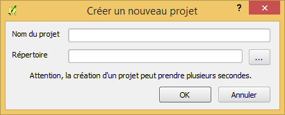
Saisir les paramètres du nouveau projet selon les indications suivantes :
L'ouverture d'un projet QGIS se fait via l'outil classique de QGIS : 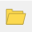. Ouvrir le fichier project.qgs du répertoire de projet.
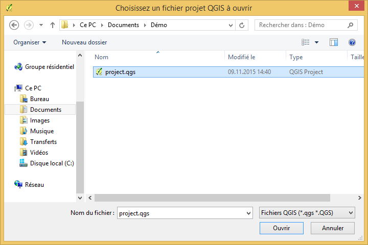
Une fois le projet créé, l'interface s'affiche avec le fond de carte OpenStreetMap. Des couches de données peuvent alors être ajoutées, en vue d'importer plusieurs entités dans une même couche.
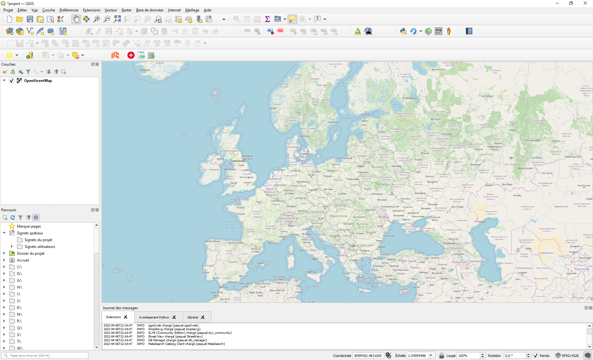
Cet outil permet d'importer des données depuis un fichier SHP, GeoJSON, ou DXF. Cliquez sur l'outil pour ouvrir la fenêtre de sélection du fichier à importer.
Si les systèmes de coordonnées ne sont pas les mêmes, une reprojection est automatiquement appliquée.
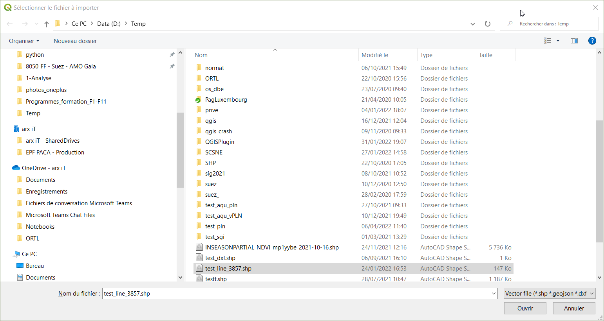
La suite l'import dépend du type de fichier à importer :
L'import du fichier SHP, ou GeoJSON, nécessite une configuration préalable, appelée mapping. Après sélection d'un fichier SHP ou GeoJSON, la fenêtre de configuration s'ouvre.
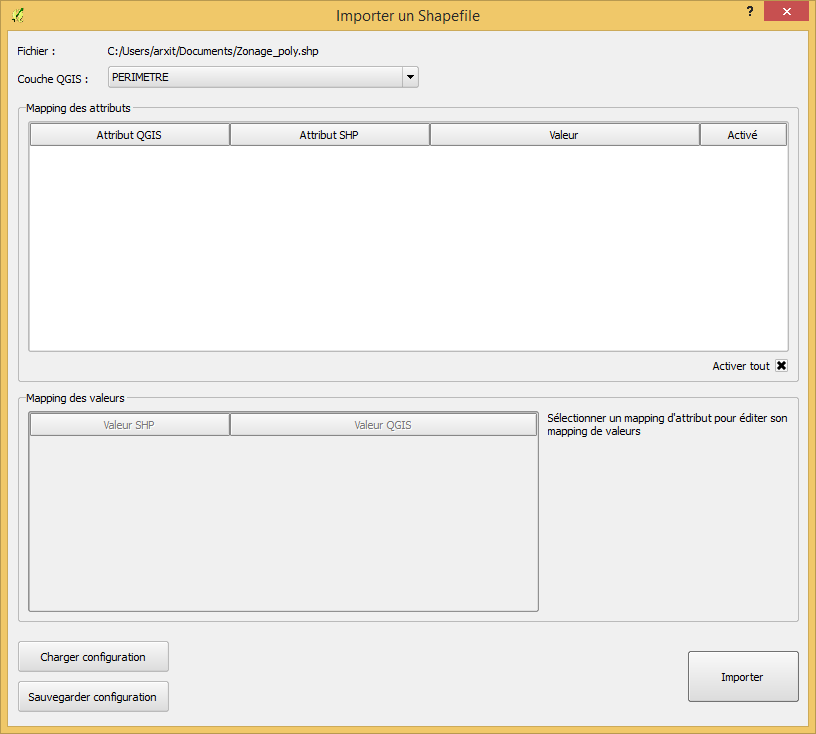
Dans la première liste déroulante, sélectionnez la couche QGIS dans laquelle importer le fichier SHP ou GeoJSON.
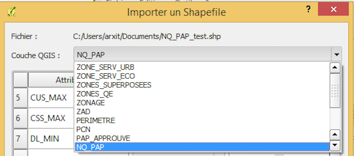
La seconde étape consiste soit à assigner un attribut QGIS à chaque attribut, soit assigner directement une valeur constante. Lors de l'importation, le contenu de l'attribut SHP ou GeoJSON, ou la constante seront alors copiés dans l'attribut QGIS correspondant. Une fois la couche QGIS sélectionnée, la liste des attributs de cette couche (attributs QGIS) est disponible dans les différentes boites déroulantes. Si le nom de l'attribut QGIS est le même que le nom de l'attribut SHP ou GeoJSON, le plugin le proposera par défaut. Vous pouvez choisir l'attribut QGIS qui correspond à l'attribut SHP ou GeoJSON source. Il est possible de désactiver un mapping si vous ne souhaitez pas importer un attribut SHP ou GeoJSON.
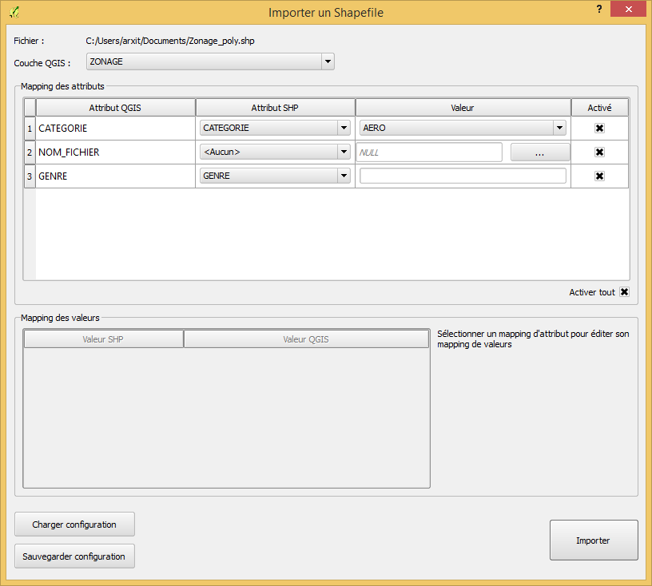
La troisième étape est optionnelle (et expérimentale !) et concerne les attributs QGIS rattachés à une liste de valeur.
En cliquant sur la ligne de l'attribut en question, il est possible de définir un mapping de valeurs.
Ce mapping de valeur permet d'associer directement les valeurs SHP ou GeoJSON aux bonnes valeurs QGIS.
Cliquez sur importer.
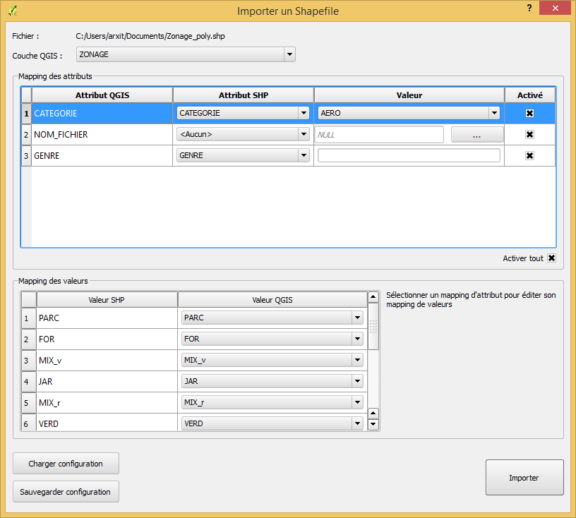
Un message indique la fin de l'import, et la carte zoom sur les entités importées.
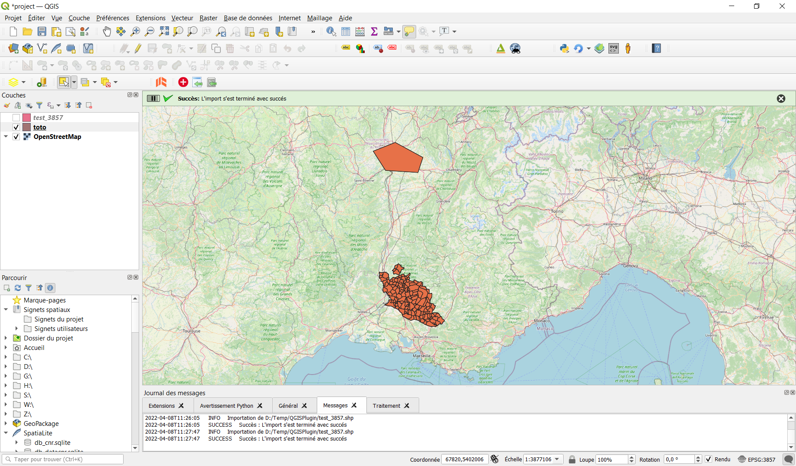
Comme l'import SHP / GeoJSON, l'import du fichier DXF nécessite une configuration préalable, légèrement plus complexe, appelée mapping. En effet, contrairement à un fichier SHP / GeoJSON, un calque DXF peut contenir plusieurs types de géométries. Après sélection d'un fichier DXF, la fenêtre de configuration s'ouvre.
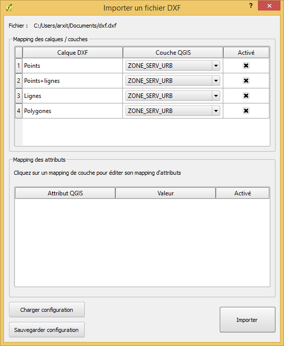
La première étape consiste, pour chaque calque DXF, à indiquer dans quelle couche QGIS ils doivent être copiés. Il est possible de désactiver un import de calque en le décochant.
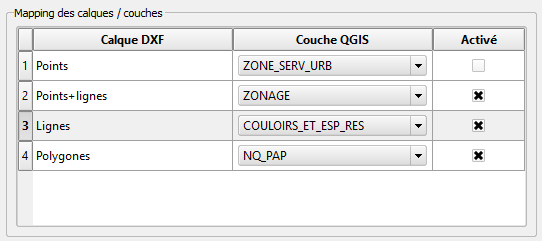
La seconde étape consiste, pour chaque mapping calque DXF -> couche QGIS, à sélectionner les constantes à insérer dans les attributs QGIS. Pour cela il faut cliquer sur le mapping à configurer dans le cadre du haut, puis saisir les valeurs dans le cadre du bas.
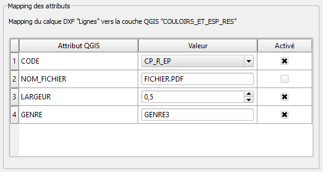
Une fois configuré, cliquez sur importer.
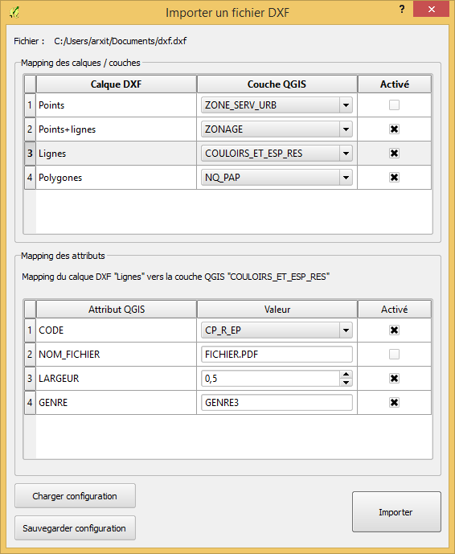
Si le système de coordonnées du fichier DXF est inconnu, le message suivant apparaît.
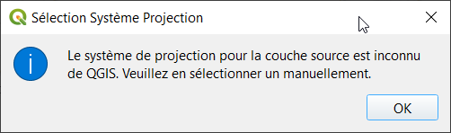
Il est alors possible de sélectionner un système de coordonnées, afin que les données DXF soient correctement géolocalisées dans la couche dans laquelle importer.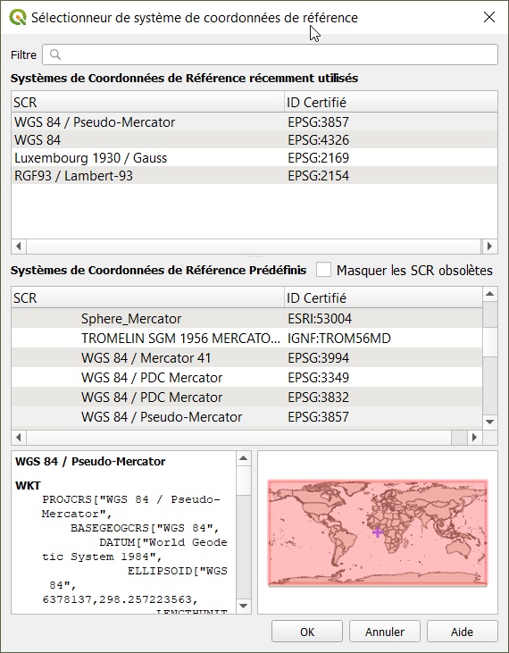
Un message indique la fin de l'import ; et la carte zoome sur les entités importées.
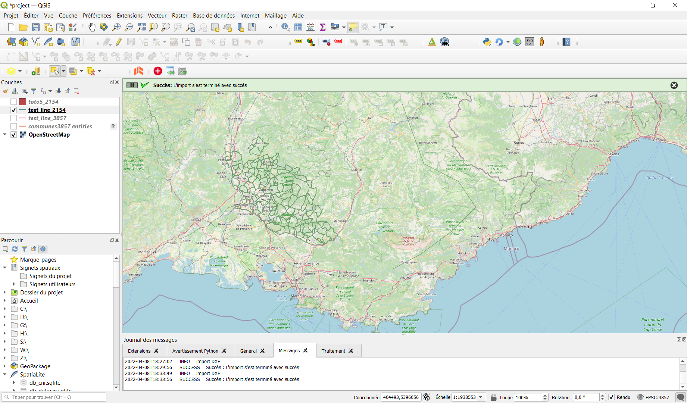
Cet outil permet d'annuler un import en cas d'erreur par exemple. Cliquer sur l'outil pour ouvrir la fenêtre.
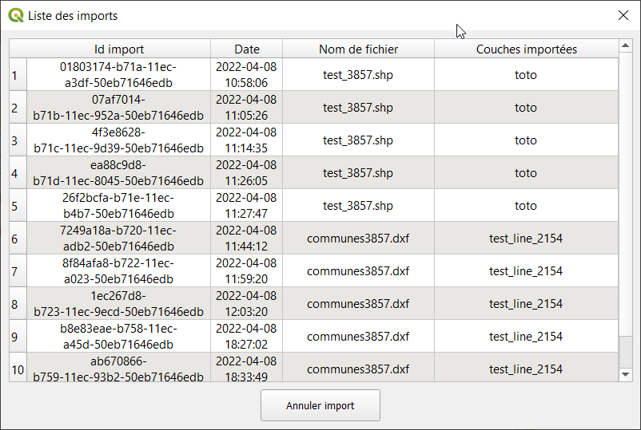
Un tableau liste les imports effectués, on y trouve l'identifiant de l'import, la date, le nom du fichier importé et les couches importées.
Cliquer sur annuler l'import pour supprimer tous les objets rattachés à cet import sur toutes les couches.
Un message indique la fin de la suppression.